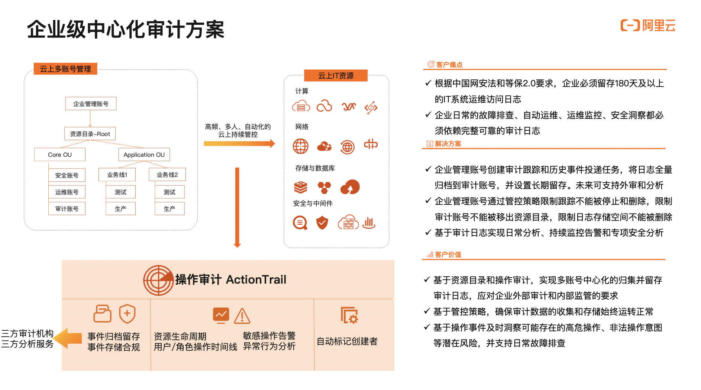

该方案有何用途？
- 中国网安法和等保2.0等法规级别的合规条例，都要求所有具备IT系统（云上和云下的都包括）的企业必须记录留存180天以上的IT系统的运维访问日志。企业若不满足该要求，可能面临大额罚款甚至暂停经营的风险。同时，企业日常在故障排查、司法纠纷追查、高危监控和安全分析等方面也都必须依赖一份完整、长期、可靠的审计日志。否则运维工作将是黑盒的，这将给整个企业IT系统的运维带来巨大的风险。
- 企业将IT系统托管云上，所有运维管控动作都通过客户端访问到云端，客户侧不再有能力自行抓取和记录完整的日志。所以阿里云提供了操作审计服务，帮助客户追踪记录访问到云端的操作日志，并以服务的方式将操作日志交付给客户。
- 该方案指导企业客户在多账号的云上IT架构下，正确稳妥地归集并留存审计日志，确保持续稳定的归集。并提供了一套基于操作日志进行安全监控和分析的模型。可指导企业客户搭建云上的审计中心。
客户侧需要该方案的问题场景
- 1. 企业受外部审计机构要求，必须留存180天及以上的审计日志，在企业接受评估时需能够呈现该审计日志。
- 2. 企业面对内部的运维问题，如疑似AK泄露、异常的停机宕机、计划外的资源增删、违法员工操作盘查、故障排查、资源生命周期追溯、异地登录、异常操作、高危操作等，需要依赖审计日志进行排查和分析。
